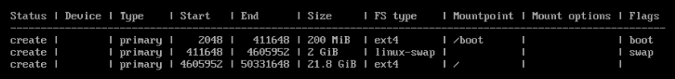
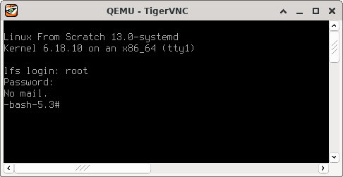
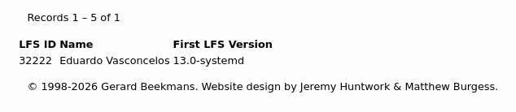

Compilando Linux From Scratch (LFS)
"Playfully doing something difficult, whether useful or not, that is hacking."
-- Richard Stallman, On Hacking
Ao longo das últimas semanas, em detrimento dos devidos sono e asseio, trabalhei, pela primeira vez, na compilação do meu próprio sistema Linux. Usei como guia o livro Linux From Scratch: Version 13.0-systemd, publicado pelo projeto homônimo, Linux From Scratch. Os processos de compilação e configuração básica já estão finalizados. Obtive um sistema LFS plenamente funcional, em dual boot com o host virtual Arch que utilizei para compilá-lo.
Eu uso--e amo--Linux há cerca de 15 anos. Comecei pelo Ubuntu 8.04 LTS "Hardy Heron", em meados de 2010. Desde então, não parei mais: já tive a minha parcela de distro hopping; converti algumas pessoas e ajudei outras tantas a instalarem ou configurarem Linux; instalei e administrei servidores Linux críticos no meu primeiro emprego formal, como sysadmin; venho usando Linux como ferramenta de trabalho há anos, como engenheiro de segurança; e a minha computação pessoal, como não poderia deixar de ser, é completamente baseada em Linux. Atualmente, o meu amado daily driver é um ThinkPad T480--usado--com Arch, btw. No entanto, até hoje, uma das peças faltantes na minha trajetória era compilar o meu próprio sistema Linux. Esse já era um sonho de longa data. Há pouco, ele foi realizado.
Em um primeiro momento, esse exercício pode até parecer algo muito difícil de ser cumprido, mas a verdade é que compilar LFS é muito mais simples do que parece, dada a devida assiduidade no uso de Linux, e o grande "plot twist" é que esse processo serviu para revelar muita, mas muita coisa sobre Linux que eu simplesmente não sei. Vejo que compilar o meu próprio sistema pela primeira vez foi apenas o início da fase de desconstrução em um processo de aprendizado que, estou certo, ainda vai durar muito tempo.
Sem mais delongas, a seguir, relato humildemente como foi a minha experiência de compilar Linux From Scratch.
Para quem é o Linux From Scratch?
Eu não diria que seria impossível que uma pessoa que tivesse apenas iniciado a sua trajetória com Linux conseguisse compilar o seu próprio sistema Linux com base no Linux From Scratch, mas esse processo seria extremamente demorado, trabalhoso e frustrante, demandaria uma força de vontade e uma paciência muito grandes, e seria possível que o tempo investido nisso fosse mais bem aproveitado se essa pessoa se dedicasse a aprender assuntos mais básicos, adquirindo pelo menos alguns anos de experiência com Linux como daily driver antes de atacar esse projeto.
Não se engane: apesar de o livro ser muito detalhado, ele assume certos conhecimentos a priori, de forma que compilar Linux From Scratch demanda bastante afinidade com o terminal e conhecimento prático sobre particionamento, sistemas de arquivos, permissões e builds a partir de código-fonte, dentre outros assuntos.
O livro deixa muita coisa a cargo do leitor, e eu diria que conhecimento prático de Linux--que me parece que só pode ser adquirido ao longo de um tempo razoável de daily driving--é fundamental para o sucesso de certos procedimentos de compilação e até mesmo de setup. Ter afinidade com virtualização de sistemas Linux, por exemplo, me parece algo particularmente interessante, por simplificar--muito--o setup do host de compilação. Sem falar que colocar o sistema de pé depois da compilação é praticamente por sua conta: o livro fala muito pouco sobre configurações de boot, até porque estas dependem muito do host que você tiver escolhido, do uso ou não de dual boot e/ou das características da máquina em que você for colocar o LFS de pé.
Instalação do host
Eu optei por utilizar uma máquina virtual Arch como host de compilação, usando o QEMU em uma máquina Arch física como virtualizador. O primeiro passo foi criar um disco virtual para o host. Usei o qemu-img para isso:
qemu-img create -f qcow2 arch.qcow2 24G
24 GB me pareceram razoáveis diante da documentação suplementar do LFS sobre particionamento. Em seguida, iniciei a VM com:
qemu-system-x86_64 -cdrom archlinux-2026.03.01-x86_64.iso -boot order=d -drive file=arch.qcow2,format=qcow2 -m 8G
Não cabe cobrir todo o processo de instalação do Arch aqui, mas eu particionei o disco virtual da seguinte forma:

Quanto ao tipo de instalação do Arch, optei por Minimal. Também incluí os pacotes openssh e vim. De uma próxima vez que for compilar LFS, também vou incluir wget e, possivelmente, trocar o Vim pelo Nano, por uma questão de manter a simplicidade. Como constatei depois, as necessidades de edição para compilar LFS são bastante básicas. Além disso, criei um usuário e fiz dele sudoer. Teria sido interessante, ainda, já instalar os pacotes das dependências de compilação do LFS para o host durante a instalação do Arch. Como não fiz isso, precisei instalá-las mais adiante.
Finalizada a instalação, deliguei e reiniciei a VM com:
qemu-system-x86_64 -boot order=d -drive file=arch.qcow2,format=qcow2 -m 8G
Seria interessante já ter utilizado -smp 4 aqui para iniciar o host com 4 processadores. Eu acabei não fazendo isso e precisando desligar a VM para reiniciá-la com essa configuração mais adiante, no meio do processo, o que resultou em ter de refazer parte do setup de compilação no host, conforme a seção 2.3 e o final do capítulo 7 do livro discutem.
Configuração do SSH
Após acessar a VM via VNC, segui com a configuração de SSH para que eu pudesse ter um terminal mais bem servido de features para trabalhar durante a compilação. Eu diria que esse passo é quase imprescindível ao optar por compilar LFS em ambiente virtualizado. Poder colar comandos copiados da versão HTML do livro em uma sessão de SSH entre a sua máquina física e o host de compilação me parece ser a maneira mais segura de seguir os passos do livro, por evitar problemas relacionados a erros de digitação ao reproduzir comandos em um terminal em que você não consegue copiar e colar, além de possíveis inconsistências ao copiar comandos a partir da versão PDF do livro.
No Arch--com o openssh devidamente instalado--, configurar SSH consiste em editar /etc/ssh/sshd_config. É uma boa ideia fazer um backup desse arquivo antes. É preciso descomentar:
Port 22
AddressFamily any
ListenAddress 0.0.0.0
ListenAddress ::
Além de incluir:
AllowUsers <usuário>
Onde <usuário> é o usuário que você criou durante a instalação do Arch. Depois disso, reiniciei o sshd e verifiquei se estava tudo certo com:
sudo systemctl start sshd.service
sudo systemctl status sshd.service
Por fim, configurei o serviço para iniciar automaticamente com:
sudo systemctl enable sshd.service
Feito isso, desliguei e voltei a iniciar o host de compilação, redirecionando a porta 60022 da minha máquina física para a porta 22 da VM:
qemu-system-x86_64 -boot order=d -drive file=arch.qcow2,format=qcow2 -m 8G -nic user,hostfwd=tcp::60022-:22
Com isso, pude conectar à VM usando SSH e trabalhar de maneira muito mais simples. A essa altura, fiz a instalação das dependências previstas na seção 2.2 do livro. Como já mencionei, de uma próxima fez, farei a instalação destas durante a instalação do Arch para poder pular esse passo.
Partição de LFS
Criei um segundo disco virtual de 24 GB com o qemu-img. Em seguida, desliguei e voltei a iniciar a VM, dessa vez com os dois discos:
qemu-system-x86_64 -boot order=d -drive file=arch.qcow2,format=qcow2 -drive file=lfs.qcow2,format=qcow2 -m 8G -nic user,hostfwd=tcp::60022-:22
Pude confirmar que o segundo disco estava disponível com lsblk:
NAME MAJ:MIN RM SIZE RO TYPE MOUNTPOINTS
fd0 2:0 1 4K 0 disk
sda 8:0 0 24G 0 disk
├─sda1 8:1 0 200M 0 part /boot
├─sda2 8:2 0 2G 0 part
└─sda3 8:3 0 21.8G 0 part /
sdb 8:16 0 24G 0 disk
sr0 11:0 1 1024M 0 rom
zram0 253:0 0 4G 0 disk [SWAP]
O próximo passo foi formatá-lo:
sudo mkfs -v -t ext4 /dev/sdb
Em seguida, pude seguir com a definição de $LFS, a partir da seção 2.6, e seguir as instruções de compilação e configuração, até o começo do capítulo 10. Essa foi a parte mais difícil do processo, em grande medida por ser muito repetitiva, e levei algo como duas semanas para concluí-la, mas é preciso levar em consideração que eu havia iniciado o host com um processador só. A certa altura, eu o reiniciei com 4 processadores para melhorar em alguns pontos percentuais a minha qualidade de vida. Esse tempo poderia ter sido menor se eu o tivesse iniciado com 4 processadores desde o começo. Além disso, eu não me dediquei em tempo integral, mas apenas no tempo livre, especialmente à noite e nos finais de semana. Ademais, como eu executei todos os testes, a compilação de alguns pacotes, como o GCC, foi particularmente demorada.
.
.
.
.
.
.
.
.
.
/etc/fstab
Finalizada a compilação dos pacotes, segui aos últimos passos da instalação. A seção 10.2 discute a criação de /etc/fstab. Dadas as características do meu setup, o meu arquivo ficou assim:
bash-5.3# cat /mnt/lfs/etc/fstab
# Begin /etc/fstab
# file system mount-point type options dump fsck
# order
/dev/sda1 /boot ext4 defaults 0 2
/dev/sdb / ext4 defaults 1 1
/dev/sda2 swap swap pri=1 0 0
# End /etc/fstab
Compilação e instalação do kernel
A compilação do kernel foi mais simples e, sobretudo, mais rápida do que eu imaginava. Chequei os parâmetros de compilação duas vezes. O processo se deu sem intercorrências e durou menos de uma noite--iniciei a compilação por volta das 20h30 e, às 6h00 do outro dia, ela já havia finalizado. Como o meu plano era manter o LFS em dual boot com o host Arch, montei a partição de boot e copiei a imagem compilada do kernel para ela--no meu caso, a imagem x86_64 vmlinuz-6.18.10-lfs-13.0-systemd:
bash-5.3# ls /boot/vmlinuz-6.18.10-lfs-13.0-systemd
/boot/vmlinuz-6.18.10-lfs-13.0-systemd
Configuração do GRUB
Finalmente, alterei as configurações do GRUB. Optei por adicionar a entrada de menu do GRUB do LFS no grub.cfg criado pelo próprio Arch, em uma seção destinada especificamente a personalizações. Apesar de ser fácil gerar um novo arquivo de configuração do GRUB com o host Arch caso o original seja corrompido, é uma boa ideia fazer um backup desse arquivo antes de editá-lo:
### BEGIN /etc/grub.d/40_custom ###
# This file provides an easy way to add custom menu entries. Simply type the
# menu entries you want to add after this comment. Be careful not to change
# the 'exec tail' line above.
insmod part_msdos
insmod ext2
set root='hd0,msdos1'
set gfxpayload=1024x768x32
menuentry "GNU/Linux, Linux 6.18.10-lfs-13.0-systemd" {
linux /vmlinuz-6.18.10-lfs-13.0-systemd root=/dev/sdb ro
}
### END /etc/grub.d/40_custom ###
Note-se que o processo de atualização do GRUB conforme documentado na Wiki do Arch--i.e. usando grub-mkconfig, mesmo com GRUB_DISABLE_OS_PROBER=false--, não funciona aqui. É preciso atualizar o GRUB manualmente, conforme o próprio livro previne, no final da seção 10.4.4.
Boot
Após algumas iterações de reescrita do grub.cfg, voilà!

Registro na base de usuários do LFS
Depois de finalmente colocar o sistema de pé, decidi registrar o meu nome na base de usuários do LFS. Sou o usuário número 32222--de quebra, fiquei com um identificador super fácil de lembrar:

E agora?
Eu não poderia estar mais satisfeito. Pus em prática um anseio de longa data. Além disso, não apenas obtive um sistema funcional, mas também aprendi várias coisas e descobri outras tantas que eu ainda preciso aprender sobre Linux.
Isso me leva a concluir que eu preciso refazer esse exercício de compilar LFS. Tão logo tenha acabado de "curtir" a minha primeira instalação e descansado um pouco--este relato pode não deixar transparecer, mas o projeto aqui descrito é bastante cansativo--, vou reiniciar o processo, do zero.
Isso vai me permitir olhar com mais calma e maturidade para alguns aspectos do processo de compilação que ainda não estão completamente claros para mim, em especial a teoria por trás de cross compiling, além de modificar o código de alguns pacotes e experimentar com alguns parâmetros de compilação. Antes, porém, planejo fazer algumas rodadas de experimentação com o sistema funcional que eu já tenho, além de portá-lo para uma máquina física. A vítima vai ser um ThinkPad T420si--usado--velho de guerra.
É isso. Estando o leitor munido do significado de "hacking", enunciado no começo deste relato, eu me despeço:
Happy hacking, and may Linux be with you.